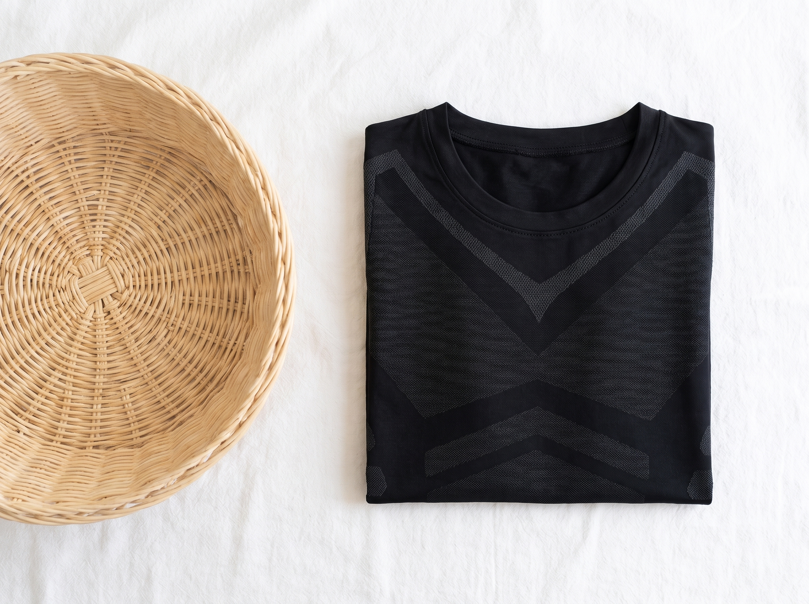
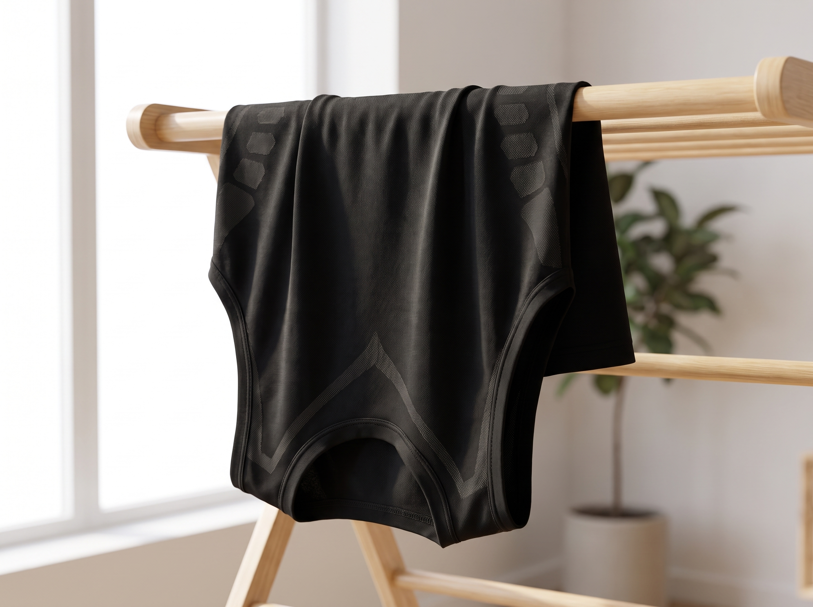

UNHIDDEN
Keep It
Flat.
Look after it right and it holds you just as well on day three hundred as it does on day one. Here's the whole routine. It takes no extra effort once you know it.
Your care card · Part of the Finish-Line Kit
Why this matters
Two minutes now saves your tank for years
The thing that makes this tank work is the stretch built into the fabric. That same stretch is the thing that bad washing quietly kills.
Hot water, harsh drying and fabric softener all break down the fibres that do the holding. Treat it right and it keeps its grip for a long, long time. Treat it like an old gym sock and it will go slack in a month.
Good news. The routine is simple, and once you know it you'll do it without thinking. Here it is, start to finish.

The one most people get wrong
Skip the fabric softener
If you only remember one thing from this card, remember this one.
Fabric softener leaves a coating on the fibres that stops them springing back. It feels nice for a single wear, and then the compression is gone for good. It is the fastest way to ruin a tank like this, and most people have no idea they're doing it.
Never use softener on this tank
Want it to feel softer anyway? Add a small splash of plain white vinegar to the rinse instead. It softens the fabric and cuts any detergent residue, and it does zero damage to the stretch. The smell washes out completely.
Step two
Drying
This is where most compression gear dies young. The hot dryer warps and loosens the fabric faster than anything else you can do to it.
- Air dry. Hang it up or lay it flat and let it dry on its own. That's the whole secret to a tank that lasts.
- Never a hot dryer. If you take one thing from this page, that's it.
- If you absolutely must use a machine, lowest heat or an air only setting, and pull it out while it's still slightly damp.
- Reshape it while damp. A quick smooth back into shape with your hands and it dries exactly the way it should sit.

The short list
Four things to never do
- No bleach. It eats the fibres that hold you flat.
- No ironing, especially over the panels. Heat again, same problem.
- No dry cleaning. The chemicals are far too harsh for this fabric.
- No hard wringing. Press the water out gently with your hands instead of twisting it.
That's the full list of don'ts. Avoid those four and you've avoided every way people wreck a tank like this.
Keep this handy
The one glance version
Screenshot this page or stick it on the laundry shelf. It's the whole routine in one look.
Wash
Inside out, cold water, gentle cycle, a little mild detergent.
Never
No fabric softener, no bleach, no hot dryer, no ironing, no dry cleaning.
Dry
Air dry, hung or laid flat. Reshape while damp.
Last longer
Rotate two or three, store folded flat, wash only when it needs it.
UNHIDDEN
Five minutes
of knowing.
Years of flat.
That's the trade. Learn the routine once and your tank holds its shape wash after wash, year after year.
Welcome to the club.